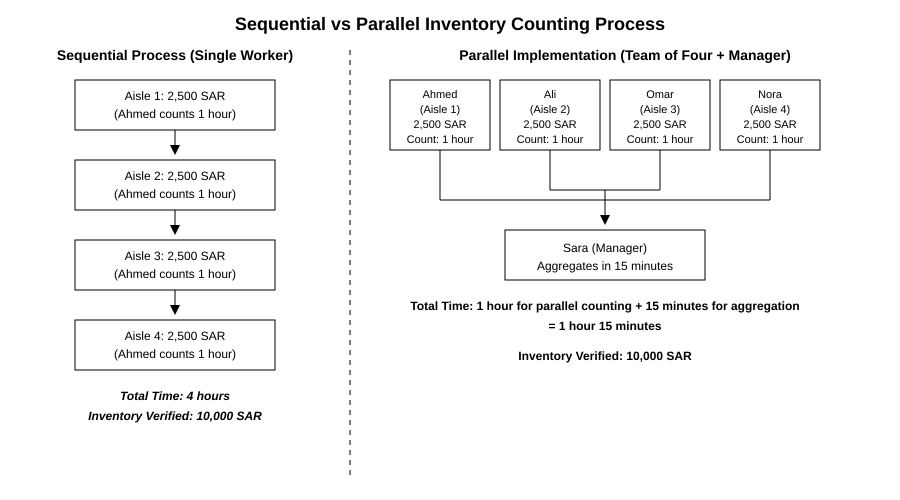
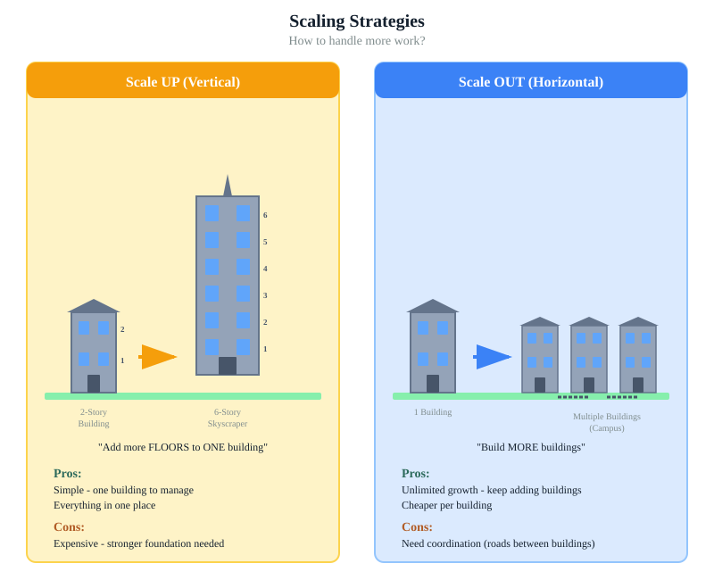
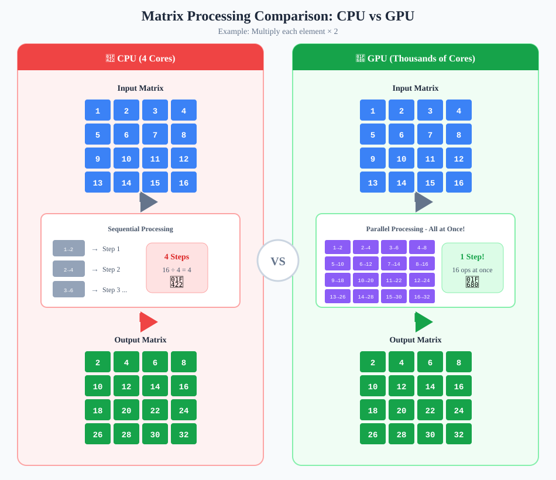
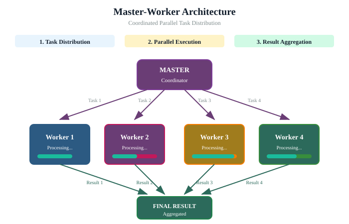
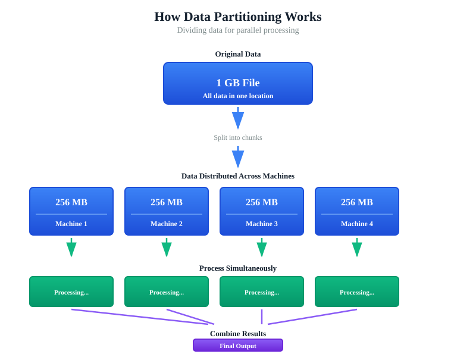
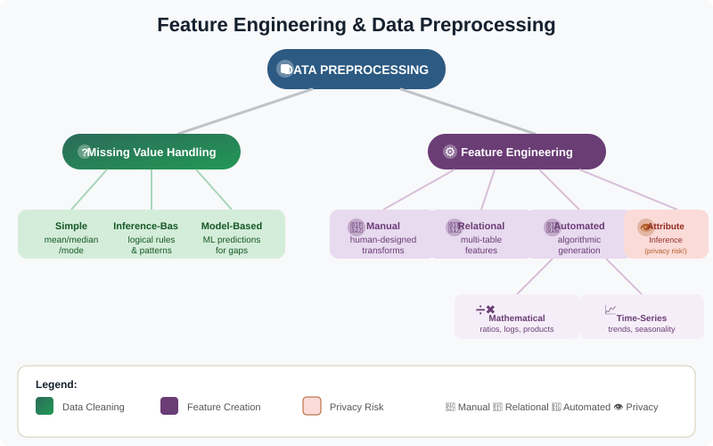
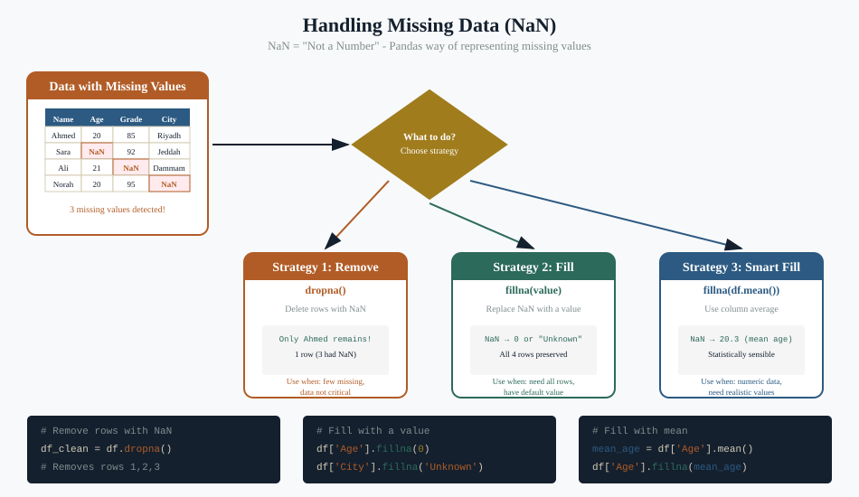
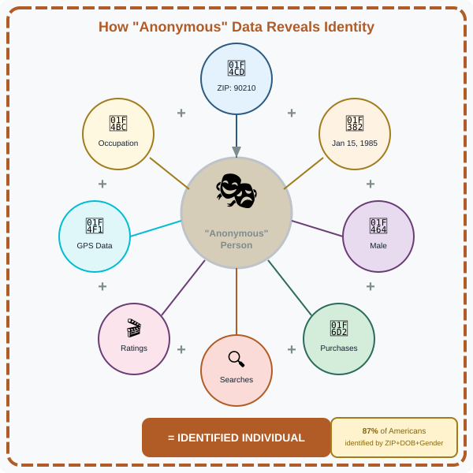
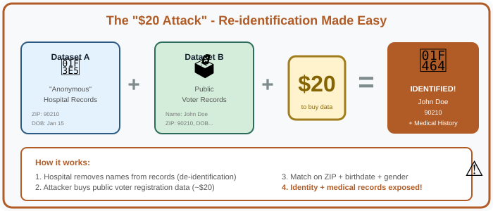

Sarah's warehouse
Sarah runs a warehouse. One morning a shipment of 4,000 items arrives that needs to be inspected, labelled, and sorted. Ahmed, working alone, takes four hours. Sarah brings in three more workers the next day for the same shipment size. They finish in 1 hour 15 minutes.
Not 1 hour exactly. Why? Because some time is spent on coordination — one worker waits for the labeller, another finishes their pile early and helps a slower neighbour. The team isn't 4× faster than Ahmed; it's about 3.2× faster. That gap between "what you'd expect" and "what you actually get" is one of the most important numbers in big-data infrastructure.

This is parallel processing in a sentence. To go faster, add workers. But coordination is never free, and the gap between perfect parallelism and real parallelism is where most infrastructure discussions actually live.
Scaling up vs. scaling out
When more capacity is needed, you have two options. Both work. They have very different cost, resilience, and procurement profiles.

Scaling up — the skyscraper
One bigger, faster machine. More CPU, more memory, more disk. Simple to operate. Limited by the largest single machine you can buy. When it fails, everything fails.
Scaling out — the campus
Many smaller machines working in parallel. Cheaper per unit of compute. Practically unlimited if your software supports it. When one machine fails, the rest carry on.
For a leader: when an IT team proposes a "single big server" answer, ask what happens when it goes down. When they propose a "cluster" answer, ask how the work is split and what software keeps the cluster coordinated. The right answer depends on your workload, but you should never accept "we just need a bigger machine" without a discussion of resilience.
CPU vs. GPU
Two kitchens. The first has one expert chef who can cook anything — sashimi, soufflé, biryani. She does it sequentially, one dish at a time, and each dish is excellent. The second is an assembly line with 200 workers, each one doing one tiny step (chop onion, plate, garnish) on hundreds of identical bowls of pasta. The first kitchen is a CPU. The second is a GPU.

Modern AI — especially deep learning — is overwhelmingly matrix arithmetic, the same small operation done millions of times. That's the bowl-of-pasta problem. GPUs do this 100× faster than CPUs. That is why every AI infrastructure conversation eventually becomes a GPU conversation. It is also why GPUs are expensive, scarce, and a major procurement consideration.
Practical takeaway
Ask whether the workload your team wants to run actually needs GPUs. Document classification, rule-based systems, and many "AI" tools run perfectly well on CPUs. GPUs are for training large models and running large neural networks. Don't pay for an assembly line when you have one dish to cook.
Master-worker & data locality
When you have many workers, somebody has to coordinate them. The dominant pattern is master-worker: one node assigns tasks, the workers execute, and results come back.

The other concept that drops constantly in big-data discussions is data locality. Moving data across a network is slow and expensive. Computing is fast. So the rule is:
Move computation to data, not data to computation.
If you have ten terabytes of records sitting in a particular data centre and you want to analyze them, you ship the small piece of code to where the data lives and run it there. You do not download all ten terabytes to your laptop. This sounds obvious until you watch a project ignore it and then wonder why everything is slow and expensive.

Fault tolerance
With one machine, "the machine works" is the only state. With a thousand machines, several are broken at any moment. Big-data systems are designed to keep going when individual workers die. The three usual mechanisms:
- Replication. Store each piece of data on three machines, not one. If one dies, the data is still on the other two.
- Re-execution. If a worker fails halfway through a task, the master notices and gives the same task to a healthy worker.
- Checkpointing. Long-running jobs save their progress periodically so they don't have to start over after a crash.
Practical takeaway
When evaluating a proposal, ask: "What happens if one of these machines fails halfway through?" A good architect will have a crisp answer. A worrying silence means the system has not been designed for failure — only for happy paths.
The detective story
A detective walks into a living room. There's a half-eaten birthday cake, deflated balloons, a small bicycle leaning against the wall, and a card on the table. She has not been told anything. Within seconds she infers: a child's birthday party happened here recently, the child is probably 5–7 years old (small bicycle, cartoon-themed cake), and the party has ended (half-eaten cake, deflated balloons).
The detective never asked for any of those facts. She read them off cues nobody bothered to hide. This is exactly what AI does with data, and it has profound implications for what "private" means.
The data your organization holds is full of these cues. A lot of what looks like benign metadata is, when combined, deeply revealing. We will see in a few sections just how cheap and how successful this kind of inference can be.
Feature engineering
Before AI can learn from your data, the data has to be turned into features — numerical or categorical inputs the model can work with. This translation step is called feature engineering, and it's where most of the real intelligence in many ML projects actually lives.
Explicit vs. implicit data

- Explicit data is what users hand you on purpose: the form they filled in, the rating they gave, the box they ticked. Honest, structured, but limited.
- Implicit data is what they reveal without meaning to: how long they hovered on a page, which links they didn't click, what time they logged in. Vastly richer, but ethically heavier.
Three flavours of feature engineering

- Manual. A domain expert decides what to compute. "Add a column for 'days since last purchase' — we know that predicts churn."
- Relational. Combine fields from multiple tables. "Join customer records with order records and compute lifetime spend."
- Automated. Let an algorithm generate features and keep the ones that help. Powerful, but the resulting features can be hard to explain to a regulator.
Inference-based imputation

When data is missing, you have to do something. The safest options — drop the row, mark it explicitly as missing — are honest but reduce your sample size. The seductive option — infer the missing value from the other columns — preserves your sample but changes the data into something that wasn't actually observed.
For a leader: when a model "knows" something a customer never told it, you should know which imputation method produced that knowledge. There is no rule against inference, but there are rules against pretending it didn't happen.
The privacy reckoning
For most of the last twenty years, organizations published "anonymized" datasets and assumed they were safe. They were wrong.
Quasi-identifiers

A name is an obvious identifier. A ZIP code is not — thousands of people share one. A birth date is not — thousands share one. Gender is not — half the country shares one. But the combination of ZIP code + date of birth + gender uniquely identifies 87% of the U.S. population. This is the classic finding by Latanya Sweeney, and it shattered the industry's assumption that removing names was enough.
Four cautionary tales
1. Governor Weld
In the mid-1990s, Massachusetts released "anonymized" hospital records of state employees. The Governor, William Weld, was among them. Latanya Sweeney bought the public voter list for $20, joined the two datasets on ZIP, birthday, and gender, and sent the Governor's medical records to his office. She had not broken any law. She had used only public data.
2. AOL search data
In 2006, AOL released 20 million search queries from 650,000 users with names replaced by ID numbers. Within days, journalists had identified specific users by reading their search histories — queries about specific landmarks, specific medical conditions, specific people. AOL pulled the data; the damage was done.
3. Netflix Prize
Netflix released 100 million movie ratings with user IDs anonymized for a $1M prediction-accuracy competition. Researchers cross-referenced with public IMDB ratings and re-identified specific Netflix subscribers, including details about their political and religious views inferred from what they watched.
4. NYC Taxi data
New York City released anonymized taxi trip records. The medallion numbers had been hashed — but with a method weak enough to be reversed in hours. Researchers linked specific taxis to specific drivers, and specific trips to specific celebrities seen leaving specific clubs.
The pattern
In every case the publishing organization believed it had anonymized the data. In every case the anonymization was defeated by combining the dataset with another public dataset. The lesson is not "be more careful with anonymization." The lesson is that truly anonymous is much harder than it sounds, and you should assume any quasi-identifier can be linked to other public data.
The $20 Attack
The Weld attack required a $20 voter-registration list, a database join, and a Saturday afternoon. That is the threat model now. Not a state-level adversary — an undergraduate with a laptop and a credit card.

The 87% figure deserves repeating: 87% of Americans are uniquely identified by ZIP code + date of birth + gender alone. That number is for the U.S. and from the 1990s. The equivalent number in any country with detailed civil records is likely higher today, not lower, because we have more data, not less.
Try it yourself
The De-Anonymization Attack demo lets you play the attacker. You're handed a "private" set of medical records and a public registry, and asked to identify specific individuals. Try it before reading further. Most people identify several people in under five minutes.
For the formal counterpart, see also the Privacy Budget Tracker, which visualizes differential privacy — the modern formal answer to the re-identification problem.
PDPL & NDMO classification
Saudi Arabia's Personal Data Protection Law (PDPL) and the National Data Management Office's (NDMO) data-classification standard turn the abstract privacy concerns above into legal duties. A leader does not need to memorize every clause, but you do need to know:
The four classification tiers (NDMO)
| Level | Meaning | Implication for AI |
|---|---|---|
| Public | Freely shareable; release would not harm. | Any AI tool is permissible. Hosted, local, anywhere. |
| Confidential | Internal; release would cause limited harm. | Hosted tools allowed only with explicit data-handling agreement; prefer in-region. |
| Secret | Sensitive; release would cause serious harm. | Hosted tools generally not permitted. Prefer on-premises or sovereign-cloud deployments. |
| Top Secret | Highest sensitivity; release would cause exceptional harm. | Air-gapped or strictly on-premises only. No external AI tool may see this data. |
What PDPL adds on top
- Lawful basis. You need a lawful basis to process personal data — consent, contract, legal obligation, or another listed ground.
- Cross-border transfers. Strict rules on when personal data may leave Saudi Arabia, and what safeguards travel with it.
- Subject rights. Individuals have rights to access, correct, and (in defined cases) erase their data.
- Breach notification. Organizations must notify both regulators and affected individuals in defined timeframes.
The classification question every AI proposal must answer
Before you approve any AI deployment, ask: What is the highest classification level of data this system will see? The answer dictates everything else — which tools are legal, where the system can be hosted, who can have access, and what audit trail you need.
Hosted vs. local AI
The simplest framing of data sovereignty for AI: where does the data go when you use the tool? Two ends of a spectrum:
Hosted (Claude.ai, ChatGPT, Gemini)
- Easiest to set up — sign in and use.
- Most capable — biggest models, latest features.
- Data leaves the country and falls under foreign jurisdiction.
- Vendor's logs may retain queries for a stated period.
- Acceptable for Public data; sometimes for Confidential under contract; not for Secret or Top Secret.
Local / open-source (Qwen, DeepSeek, Llama)
- Harder to set up — needs hardware, IT operations, often a GPU server.
- Less capable per dollar — smaller models, slower outputs.
- Data stays inside the building under full PDPL jurisdiction.
- You own the logs, the access, the retention.
- The only acceptable choice for Secret and Top Secret data.
Live demo (instructor-led)
The instructor will run the same task from Module 2 (CSV anomaly check) against a local open-source model, projected side-by-side with the hosted version. The local result will be visibly slower and slightly worse. That contrast is the point. For Public data the hosted version wins; for Secret data the local version is the only option, even though it costs you capability. The decision is not which is "better" — it's which matches your data's classification.
Agent-specific security threats
Everything in this module so far — classification, sovereignty, hosted-vs-local — was written for the chatbot era, where the AI replied with text and a human decided what to do with it. The 2025–2026 agentic shift adds a layer of risk that the old playbook does not cover: agents act. They open files, send messages, hit APIs, modify records. A confident wrong answer is bad. A confident wrong action is worse.
The numbers (early 2026)
- 88% of organizations confirmed or suspected an agent-related security incident in the last year. The healthcare sector is at 92.7%.
- Only 14.4% of agents reach production with full security/IT approval. 80.9% of teams have moved past planning into testing or production anyway.
- Over 50% of agents run with no oversight or logging at all — "shadow AI."
- Only 22% of teams treat agents as independent identities. The rest share API keys, which means there's no log of which agent did which action.
The new threat vectors
The NSA and allied cybersecurity agencies released formal guidance on securing agentic AI in May 2026. The high-level threats they call out:
- Prompt injection. Malicious content in a document, email, or web page tells the agent to ignore its instructions and do something else — exfiltrate data, send a payment, delete a record. Because the agent reads everything in its context as instructions, the attack surface is huge.
- Tool misuse. An agent has access to ten tools. The attacker gets it to use the wrong one (use the production-database tool when only staging was authorized).
- Privilege escalation. An agent is connected to your CRM and your email and your filesystem. A compromise in one of those connections gives an attacker access to all three.
- Supply-chain attacks. Your agent uses an MCP server published by someone else. They push a malicious update. Your agent now exfiltrates data to them.
- Cascading failure. Agent A calls agent B which calls agent C. A bug or compromise in C affects everyone upstream. Multi-agent systems amplify single-point failures.
Containment is the leader's responsibility
The technical patterns to defend against these (least-privilege tool access, sandboxing, action logging, agent-as-identity authentication) exist. The reason most organizations don't have them is governance, not technology. As a leader your job is to refuse to approve agent deployments that don't include them — the same way you'd refuse to deploy a database without backups.
Procurement questions to ask IT teams and vendors
The single most useful thing you will leave today with: a list of questions to put to anyone proposing an AI system that will touch your data. Print this list. Keep it on your desk. The first ten apply to any AI deployment; the last five are agent-specific and matter even more in 2026.
- Where does the data physically go? Country, region, specific data centres if known.
- Who has access to logs? Vendor employees? Their subcontractors? What jurisdiction governs them?
- What's the retention policy? How long are inputs kept? Are they used to train future models?
- Can this run on-premises? If yes, what does that change in cost and performance?
- What's the cost difference between hosted and on-premises? Annual operating cost, not just licence cost.
- What's the highest data classification this system can legally process? Get the vendor to commit in writing.
- What's the breach-notification process? Who tells whom, when, in what format?
- If we needed to remove a user's data tomorrow, how? PDPL gives subjects rights; the system has to be able to honour them.
- What happens to our data if we cancel? Returned? Deleted? Retained?
- Who else uses this exact deployment? Are we sharing infrastructure with someone we wouldn't want to?
A vendor who can answer all ten quickly and in writing is one you can probably trust. A vendor who gets uncomfortable on Question 3 or Question 8 is telling you something important.
Five more questions if the proposal is an agent (not a chatbot)
- Does this use MCP, or a custom integration? See Day 2 — MCP is now the default expectation for portability and audit.
- What level of autonomy will it run at? Suggestion only? Per-action approval? Bounded autonomous? Fully autonomous? You should be deciding this, not the vendor.
- How does it authenticate to our systems? Does it have its own identity, or does it borrow a human user's credentials? Borrowed credentials make audit impossible.
- What's logged for every action? Specifically: which tool was called, with what arguments, by which agent, on whose behalf, and what came back. If the answer is "we log requests" but not "we log tool calls," the audit trail won't survive an incident review.
- What's the kill-switch? If we discover the agent is misbehaving at 3am, who can stop it, in what time, without breaking systems it's mid-action on?
What to take away
- Parallel processing is real but never perfect. Coordination always costs something.
- Scaling out (many small machines) usually beats scaling up (one big machine) for resilience and cost — if your software supports it.
- GPUs are the right tool for matrix-heavy ML workloads, the wrong tool for everything else. Don't pay for them out of habit.
- Move computation to data, not data to computation.
- Anonymization by removing names is not anonymization. Quasi-identifiers leak. Assume the $20 Attack works against any dataset you publish.
- 87% of people are uniquely identified by ZIP + birthday + gender. Treat that combination as personally identifying.
- Match your AI tool tier to your data's classification level under PDPL/NDMO. Public data → any tool. Secret data → on-premises only.
- Hosted AI is more capable but lives in another jurisdiction. Local AI is sovereign but currently weaker. The trade-off is the leader's call.
- The procurement question list above is short, blunt, and works. Use it.
- Agents add new threat vectors — prompt injection, tool misuse, supply-chain attacks, cascading failures — and 88% of organizations have already had incidents. The fix is governance (least-privilege tools, agent-as-identity, action logs, kill-switches), not "smarter prompts."